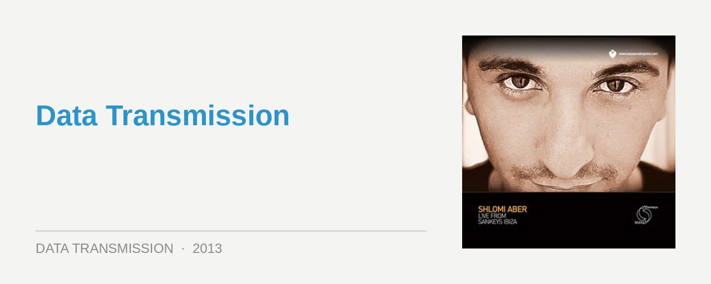

Shlomi Aber – Live At Sankeys Ibiza
Label: Be As OneScore: 8.5/10
Shlomi Aber is an icon of consistency. Without rising to the superstar status managed by techno contemporaries like Guy Gerber, he followed early anthems like 2007’s Wildside by focusing on the consistency of his contributions; not to mention ensuring there’s plenty of soul, reflecting how he’s managed to work his classic musical training into his club productions.
A key to Aber’s presence is the energy he’s invested into his Be As One imprint, which here launches its debut mix compilation. As the title suggests, Sankeys Ibiza is the focus. However, with the mix comprised entirely of releases from his label, and with all of them bundled as singles along with the mix, Live at Sankeys Ibiza is equally a showcase for Aber’s imprint.
While it’s not actually a ‘live’ recording from Sankeys as you might assume, it was recorded live in a studio setting by Aber using three decks and FX, with the intention of condensing a typical several-hour Sankeys set, where he’d move through the groovier tech house selections into some tougher-edged techno. From this perspective, Live at Sankeys Ibiza delivers pretty much everything it needs to in terms of a supremely tight 70-minutes of music. Upfront tunes, impeccable programming and a solid drive that grips your attention all the way through.
Aber begins on a tough, stripped-back tip, with the driving percussion of Gel Abril & Itamar Sagi Rain Dance, and from here he pummels through an opening 20-minutes of pulsing tech house; though there’s always a certain melodic ‘soul’ to selections like Francisco Allendes Lunatic On the Grass. From here he finally lets us breath with a delicious vocal courtesy of Möggli, with a rework of Aber’s 2012 single Foolish Games. It’s a masterful opening to the mix.
Things are gradually steered in more a techno-orientated direction for the remainder. Selections like Bimas Don‘t Surrender arrive to wonderfully hypnotic effect, though Aber makes sure those soulful vibes are still ever present. Ultimately, Live at Sankeys Ibiza is defined by its “rolling” grooves, which just never let up. It might not have actually been recorded in the club, but it certainly feels like it has. Beautifully prepared and highly recommended.